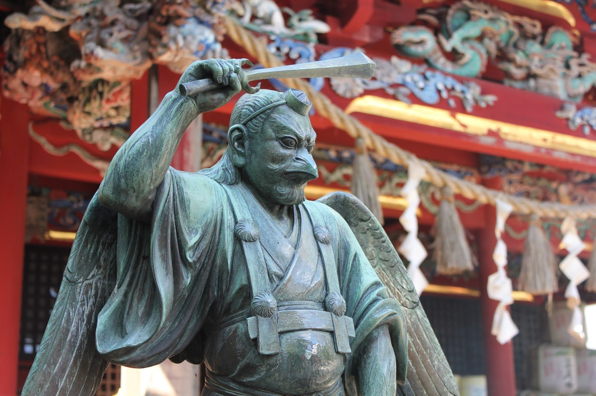
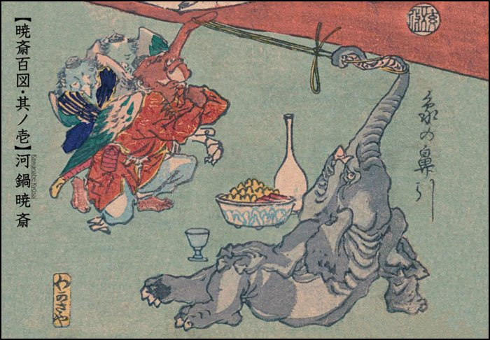
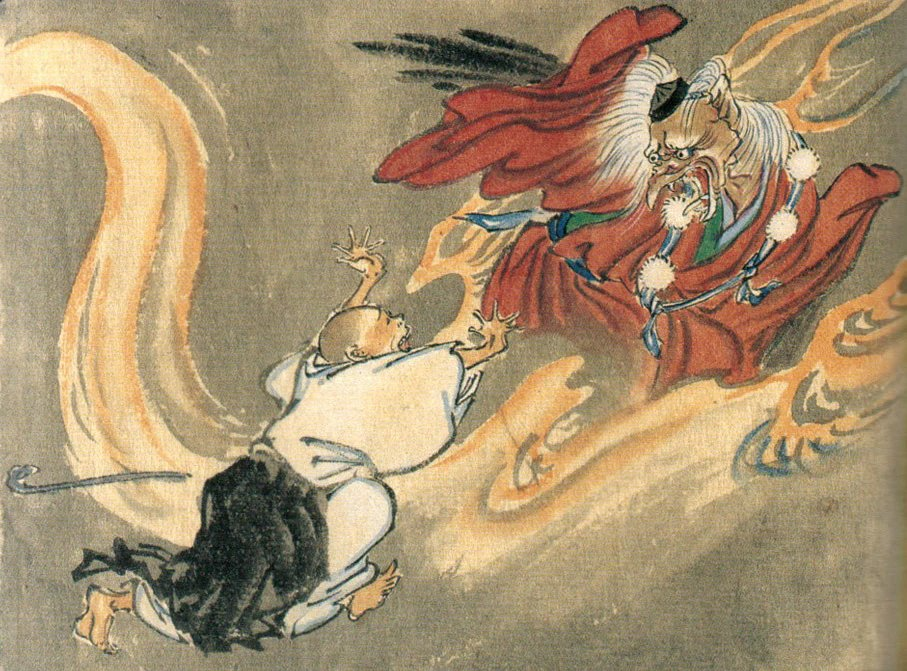

Yōkai of the Mountain — Japanese Folklore
✦ ✦ ✦
← GedichtenThe Tengu (天狗) is a prominent yōkai from Japanese folklore, known as powerful spirits dwelling in the mountains. Originating from 8th-century Chinese legends about celestial dogs associated with meteors and disasters, they evolved in Japan into two main types: the karasu-tengu (crow tengu), of avian appearance with wings, beak and claws; and the iconic daitengu (great tengu), with a long red nose, fierce face, tokin hat and robes symbolising arrogance or wisdom. Masters of wind, magic and the sword arts, they fly using hauchiwa fans, protect the ascetics of Shugendō or mock the vain and arrogant. By the Edo period, they were widely depicted in ukiyo-e woodblock prints as both feared demons and protectors of temples and shrines.

De Tengu (天狗) is een prominente yōkai uit de Japanse folklore, bekend als krachtige berggeesten. Hun oorsprong ligt in 8e-eeuwse Chinese legenden over hemelse honden, gekoppeld aan meteoren en rampen, en ze ontwikkelden zich in Japan tot twee hoofdtypen: de karasu-tengu (kraaien-tengu), vogelachtig met vleugels, snavel en klauwen; en de iconische daitengu (grote tengu), met lange rode neus, woest gezicht, tokin-hoed en gewaden als symbool voor arrogantie of wijsheid. Meesters in wind, magie en zwaardkunst, ze vliegen met hauchiwa-waaier, beschermen Shugendō-asceten of plagen de ijdele en arroganten. Tegen de Edo-periode verschenen ze vaak in ukiyo-e-houtsneden als zowel gevreesde demonen als tempelbeschermers.

El Tengu (天狗) es un yōkai prominente del folclore japonés, conocido como poderosos espíritus moradores de las montañas. Originarios de leyendas chinas del siglo VIII sobre perros celestiales asociados a meteoros y desastres, evolucionaron en Japón en dos tipos principales: el karasu-tengu (tengu cuervo), de aspecto aviar con alas, pico y garras; y el icónico daitengu (gran tengu), con larga nariz roja, rostro feroz, sombrero tokin y vestiduras que simbolizan arrogancia o sabiduría. Maestros del viento, la magia y las artes de la espada, vuelan usando abanicos hauchiwa, protegen a los ascetas de Shugendō o se burlan de los vanidosos y arrogantes. En el período Edo, fueron ampliamente representados en impresiones ukiyo-e como demonios temidos y protectores de templos.
